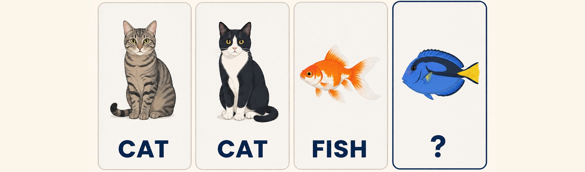

What does it mean to be intelligent?
CS 450 | Rules, examples, and learning
Write one capability or behavior your definition requires.
Psychology textbooks open with this same question, because nobody has settled on one definition.
Which of these exhibits intelligence?
- A. Plant turns toward a window
- B. Thermostat turns on the heat
- C. Dog learns where food is kept
- D. Spam filter catches a new kind of junk mail
Different definitions ask us to look for different capabilities.
Russell and Norvig
Russell and Norvig, AIMA 4th ed.
- Perceive the environment
- Act toward a performance measure
- How can a computer react?
François Chollet
Chollet, On the Measure of Intelligence (2019)
- Acquire and generalize skills
- Learn efficiently from experience
- How can a computer learn?
One lens asks how a system reacts; the other asks whether experience changes what it can do.
Each definition looks for something different, and neither one settles every case.
A supplied rule can turn an observation into a response.
1 · OBSERVE
- Room is 64°F
- Read the condition
2 · APPLY RULE
- If below 68°F, heat on
- Use the supplied procedure
3 · REACT
- Turn the heat on
- Produce the response
Room is 64°F → apply the supplied threshold → turn the heat on.
Second time, same situation. Does anything change?
Plant and light
- First exposure: turns toward the window
- Second exposure: turns toward the window again
- Did experience change the next response?
Dog and food
- First search: checks several places
- Later search: goes to the place where food was found
- Did experience change the next response?
To claim learning, look for evidence that experience changes what happens next.
We are only looking at these two behaviors, not everything a plant or a dog can do.
Takeaway: A response does not by itself show that experience changed future behavior.
Turn from using a rule to finding one.
FRONT
- GIVEN RULE
- Apply Maya's rule
BACK
- FIND A RULE
- Use Mina's examples and predict G–J
Card J: which rule predicts ‘not completed’?
J: requested 3 hours ahead, party of 6. Which rule predicts not completed?
- A. Lead-time rule only
- B. Party-size rule only
- C. Both rules
- D. Neither rule
Card J separates the rules.
Lead-time rule · 3/4
- J is 3 hours ahead
- Predicts completed
- Incorrect on J
Party-size rule · 4/4
- J is a party of 6
- Predicts not completed
- Correct on J
The observed outcome for J is not completed.
Takeaway: Party size predicts J correctly; lead time does not.
Supervised learning forms a model from examples with known outcomes.
Diagram explanation
A-F and their observed outcomes were available while students formed a rule; that learned rule is the model used to answer a new case.
- A–F · training examples leads to Rule formed from A–F · learned rule / model
- Observed outcomes leads to Rule formed from A–F · learned rule / model
- Rule formed from A–F · learned rule / model leads to Use the model on a new case
What should the model predict?

Predict the missing label.
OpenAI-generated educational illustration for CS 450 · Course review candidate; not separately licensed
Accuracy needs the cases attached.
Supported here · accuracy on held-out cases
- Task: predict completed versus not completed
- Held-out cases: G–J were not used to form either rule
- Accuracy: lead-time rule 3 of 4; party-size rule 4 of 4
- Supported result: on G–J, the party-size rule predicted all four observed outcomes correctly
Not established
- Party size caused the outcomes
- The rule will work on every future booking
- The rule is intelligent
A score reports performance inside a stated evidence boundary.
Takeaway: On held-out cases G–J, the lead-time rule scored 3/4 and the party-size rule scored 4/4.
Rules can be supplied or formed from examples.
SUPPLIED ROUTE
- Person gives the final rule
- Apply rule to a new case
- Compare prediction with outcome
LEARNED ROUTE
- Examples and outcomes form the rule
- Apply rule to a new case
- Compare prediction with outcome
Apply either rule to new cases; compare predictions with outcomes; keep the claim inside those cases.
Takeaway: Learned rules depend on their examples; new cases show only how they performed on those cases.